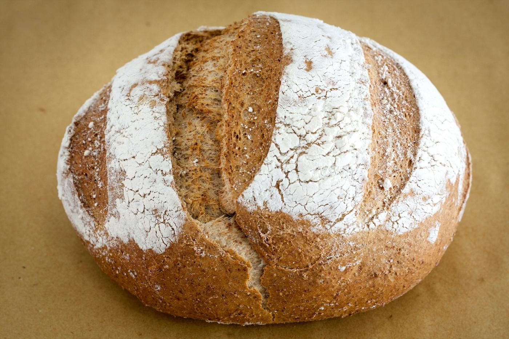
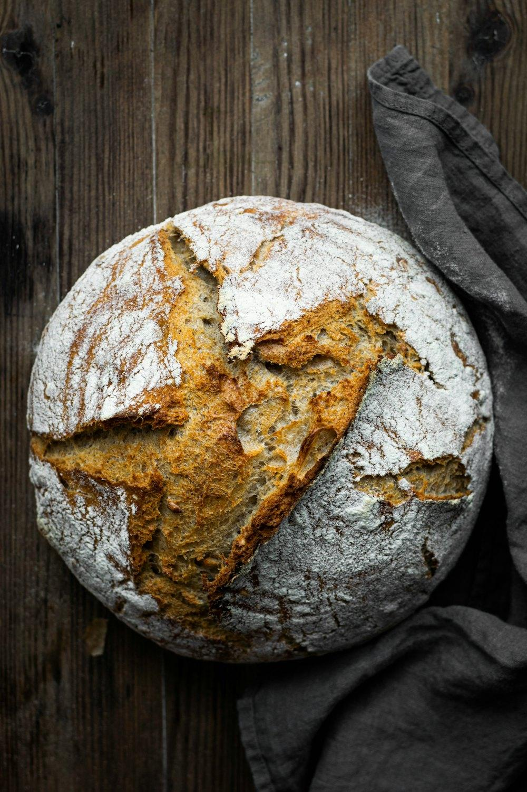
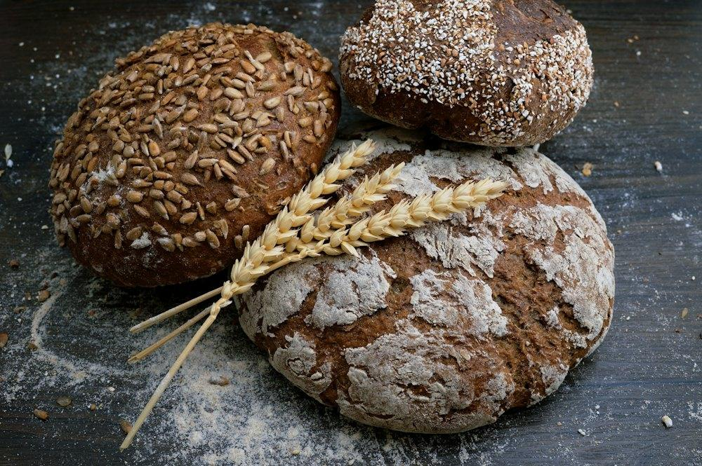
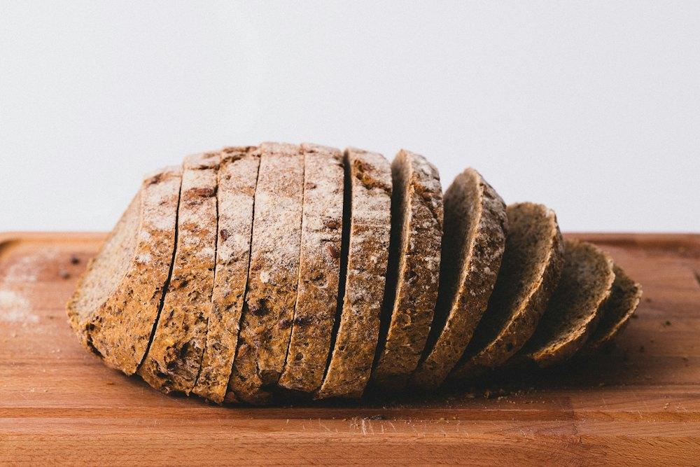
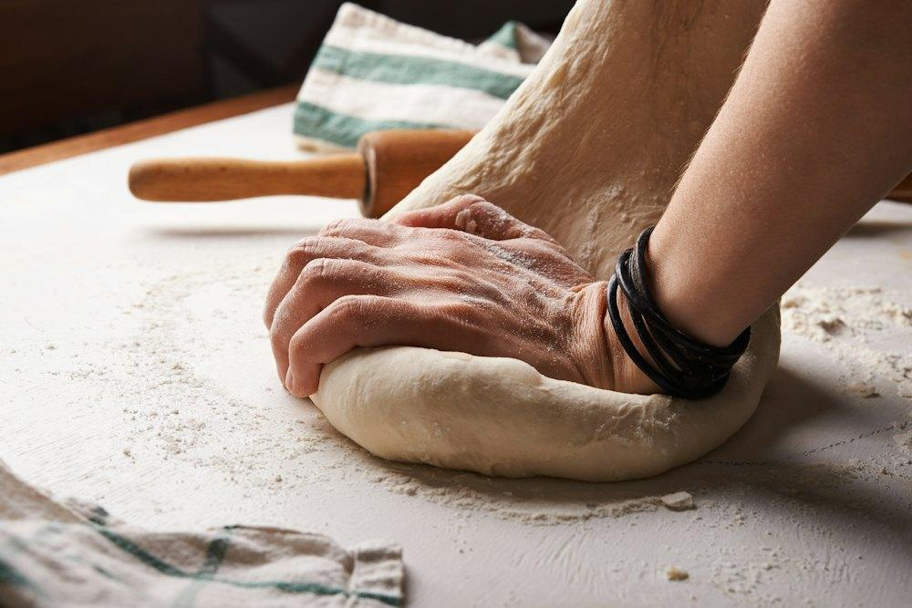
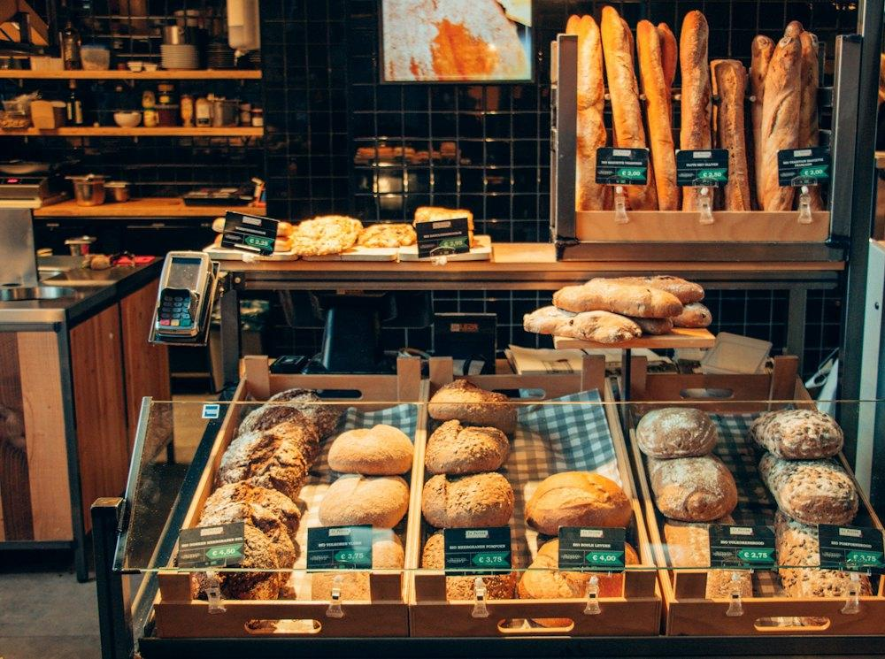
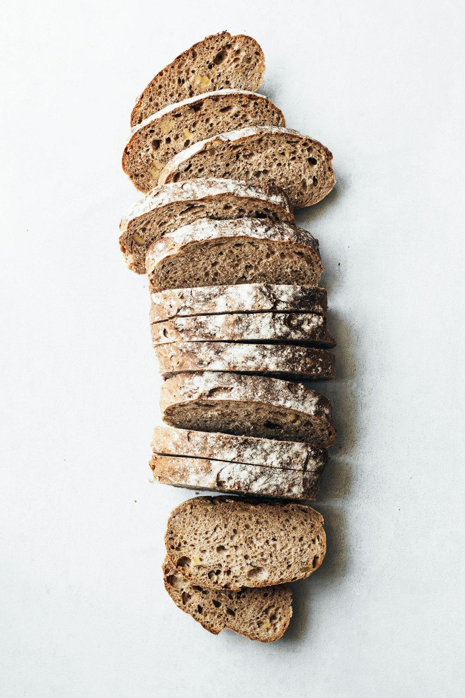
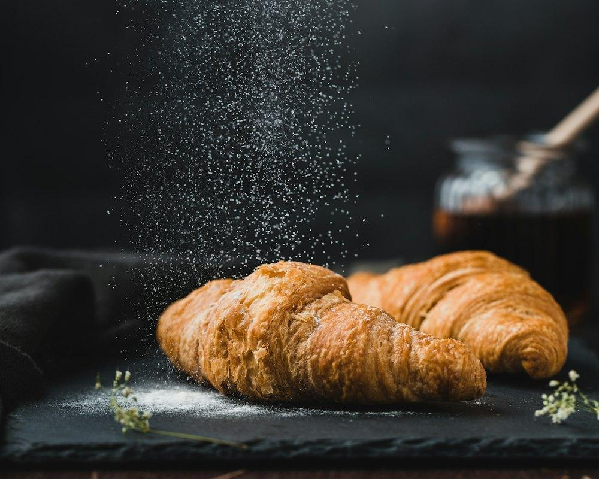

Boulangerie au levain · 41 rue Saint-Dizier
Du levain, de la farine, trente-huit heures.
Nos pains fermentent lentement, cuisent sur sole et sortent du four trois fois par jour. Réservez le vôtre, on le met de côté encore chaud.
Trois fournées du mardi au samedi, une le dimanche à 6h30.

Fournée du jour
Ce qui sort du four aujourd'hui.
Chaque pain a son poids, sa pâte, son heure. Les chiffres ci-dessous sont ceux du fournil, pas ceux d'une fiche marketing.
Miche de campagne
T80 de meule, levain liquide, 38 h de fermentation
- Poids
- 1 000 g
- Levain / pâte
- 100 / 78 %
- Sortie
- 6h30

Tourte de seigle
Seigle T130, levain de seigle, mie dense et acidulée
- Poids
- 800 g
- Levain / pâte
- 80 / 85 %
- Sortie
- 11h00

Pain aux graines
Tournesol, lin brun, sésame torréfiés la veille
- Poids
- 500 g
- Levain / pâte
- 100 / 80 %
- Sortie
- 11h00

Baguette tradition
Pointage 18 h au froid, façonnée à la main
- Poids
- 250 g
- Levain / pâte
- 100 / 72 %
- Sortie
- 6h30 · 16h00
11 pains et 3 viennoiseries au catalogue · prix TTC à l'unité
Tout le catalogueLe four à sole
Une croûte, ça se mérite.
Pas d'améliorant, pas de levure ajoutée dans la miche. Juste un levain nourri matin et soir, des farines de meule et un four qui monte à 260 °C.
L'atelier, la veille et le jour même
Trente-huit heures pour une miche.
Le pain de 6h30 commence la veille à 16h. Voici le parcours d'une miche de campagne, heure par heure.
-
Rafraîchi
Le levain chef reçoit sa farine et son eau. Il double de volume en 5 heures à 26 °C.
levain liquide 100 % -
Pétrissage lent
Autolyse de 45 min, puis pétrissage en première vitesse. La pâte sort à 24 °C.
pâte 78 % · sel 1,8 % -
Pointage au froid
Façonnée, la pâte repose en bannetons à 4 °C. Les arômes de noisette viennent de là.
4 °C · 15 h -
Cuisson sur sole
Grignée à la lame, enfournée à 260 °C, buée, puis 50 minutes de cuisson.
50 min · 260 → 230 °C


De près
La mie ne ment pas.
Alvéoles irrégulières, croûte qui chante en refroidissant, farine restée dans les plis du banneton.


Ils passent tous les matins
« Je réserve la miche le soir sur mon téléphone, je la récupère à 7h en allant au travail. Elle tient toute la semaine. »
« Le seigle de 11h est le seul que mon père, alsacien, accepte de manger hors de chez lui. »
« On voit le fournil depuis la boutique. Les enfants regardent les grignes s'ouvrir. »
Infos pratiques
Venir au fournil.
À deux pas de la place Saint-Epvre. Click & collect en boutique, livraison à vélo le samedi matin.
Horaires boutique
| Lundi | fermé |
|---|---|
| Mardi | 6h30 – 19h30 |
| Mercredi | 6h30 – 19h30 |
| Jeudi | 6h30 – 19h30 |
| Vendredi | 6h30 – 19h30 |
| Samedi | 6h30 – 19h00 |
| Dimanche | 6h30 – 13h00 |
Adresse
41 rue Saint-Dizier
54000 Nancy
- Click & collectcommande avant 22h la veille
- Livraison vélo (sam.)Nancy centre · 3 € · dès 20 €
- Tramligne 1 · arrêt Point Central
- ParkingSaint-Sébastien · 3 min à pied
Votre miche vous attend à 6h30.
Commandez avant 22h, payez au comptoir. On met votre pain de côté à la sortie du four, avec votre nom sur l'étiquette.
Précommander mon pain